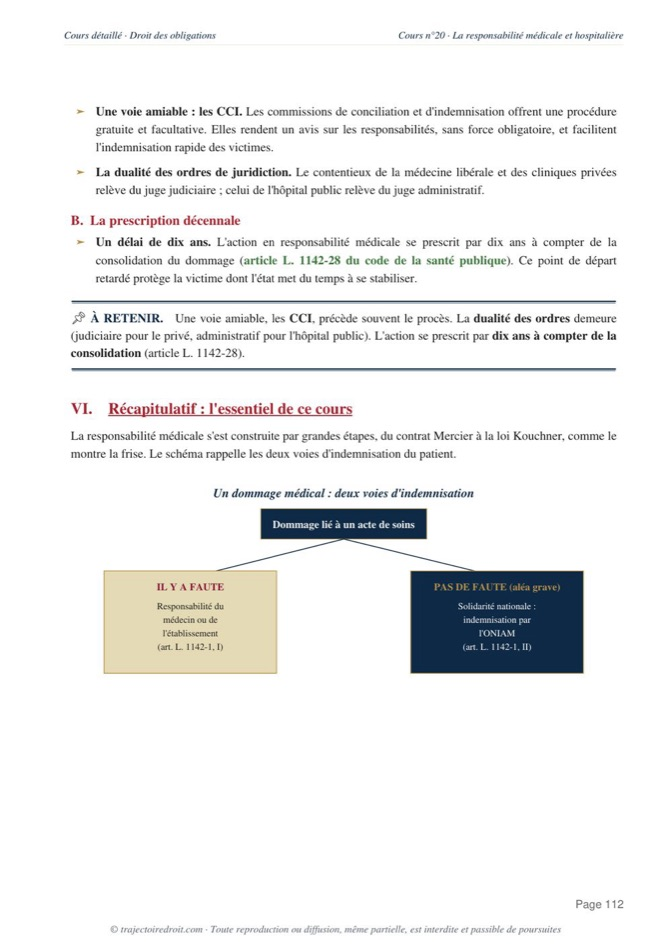

L'arrêt Mercier expliqué simplement
L'arrêt Mercier a été rendu le 20 mai 1936 par la chambre civile de la Cour de cassation. Il pose qu'un contrat se forme entre le médecin et son patient dès la consultation, et que ce contrat impose au praticien de donner des soins consciencieux, attentifs et conformes aux données de la science, sans lui imposer de garantir la guérison. C'est la naissance de l'obligation de moyens en médecine.

L'essentiel en une phrase
L'arrêt Mercier a été rendu le 20 mai 1936 par la chambre civile de la Cour de cassation, à propos d'une patiente brûlée par un traitement aux rayons X. La Cour affirme qu'un contrat se forme entre le médecin et son patient dès la consultation. Ce contrat impose au praticien des soins consciencieux, attentifs et conformes aux données acquises de la science. Le médecin promet des soins de qualité, et non la guérison elle-même. C'est la naissance de l'obligation de moyens en médecine, une notion que tu retrouveras dans presque toute la matière des obligations.
Cette solution a gouverné la responsabilité médicale pendant plus de soixante ans. La loi Kouchner du 4 mars 2002 l'a ensuite reprise dans un régime légal, sans la renier. Aujourd'hui encore, un médecin qui commet une faute technique est jugé sur le principe posé par Mercier, même si le texte applicable a changé entre-temps.
Retiens deux choses de Mercier. D'abord, la relation entre le médecin et son patient est contractuelle, et pas seulement une question de déontologie professionnelle. Ensuite, le médecin doit des soins attentifs et conformes à la science, mais il ne garantit jamais le résultat. Cette distinction entre obligation de moyens et obligation de résultat structure une bonne partie du droit de la responsabilité, bien au-delà de la médecine.
Madame Mercier consulte le docteur Nicolas, radiologue, pour une affection nasale. Le traitement par rayons X provoque une radiodermite, une brûlure grave des muqueuses du visage.
Les époux Mercier assignent le docteur Nicolas en dommages-intérêts, pour 200 000 francs. Plus de trois ans se sont écoulés depuis le traitement.
Les juges du fond retiennent un contrat médical entre le praticien et sa patiente, qui échappe à la prescription pénale. Le docteur Nicolas forme un pourvoi.
La Cour de cassation confirme la nature contractuelle du lien et pose la formule de l'obligation de moyens.

Fiche complète
Droit des obligations L2
Les faits, une brûlure aux rayons X
En 1925, Madame Mercier souffre d'une affection nasale. Elle consulte le docteur Nicolas, un radiologue, qui lui fait suivre un traitement par rayons X. Ce traitement provoque une radiodermite, c'est-à-dire une brûlure grave des muqueuses du visage, causée par une exposition excessive aux rayonnements.
Les époux Mercier attendent plusieurs années avant d'agir. En 1929, ils assignent le docteur Nicolas en dommages-intérêts, pour un montant de 200 000 francs. Ce délai est décisif. Il devient l'enjeu central du problème de droit, car la responsabilité délictuelle se prescrivait alors par trois ans, tandis que la responsabilité contractuelle laissait davantage de temps pour agir.
La cour d'appel d'Aix, le 16 juillet 1931, donne raison aux époux Mercier. Elle retient qu'un contrat médical lie le praticien à sa patiente, et que ce contrat oblige le médecin à des soins assidus, éclairés et prudents. Le docteur Nicolas forme alors un pourvoi en cassation.
Le vrai problème de droit
Le docteur Nicolas ne conteste pas avoir causé la brûlure. Il conteste le terrain sur lequel on le poursuit. Il soutient que sa responsabilité relève de la faute délictuelle, c'est-à-dire des blessures par imprudence prévues par le droit pénal de l'époque. Sur ce terrain, l'action des époux Mercier était prescrite depuis longtemps, la prescription triennale de l'article 638 du code d'instruction criminelle ayant expiré bien avant leur assignation de 1929.
La question posée à la Cour de cassation tient donc en une phrase. Existe-t-il un véritable contrat entre le médecin et son patient, avec les obligations que ce contrat fait naître, ou la faute du médecin relève-t-elle seulement de la responsabilité délictuelle de droit commun ? La réponse ne change rien à la brûlure déjà subie. Elle change tout au sort du procès, car elle décide si l'action des époux Mercier est encore recevable ou si elle est déjà prescrite.
La solution de la Cour de cassation
La Cour de cassation rejette le pourvoi du docteur Nicolas. Voici l'attendu à connaître, il vaut la peine d'être cité tel quel dans une copie.
L'attendu de l'arrêt Mercier
« Il se forme entre le médecin et son client un véritable contrat comportant, pour le praticien, l'engagement, sinon, bien évidemment, de guérir le malade, ce qui n'a d'ailleurs jamais été allégué, du moins de lui donner des soins, non pas quelconques [...], mais consciencieux, attentifs et, réserve faite de circonstances exceptionnelles, conformes aux données acquises de la science. »Cass. civ., 20 mai 1936, Mercier
Décortiquons cette phrase. La Cour affirme d'abord qu'un véritable contrat unit le médecin et son patient dès la consultation, ce qui écarte la thèse du docteur Nicolas et sa prescription triennale. Elle précise ensuite le contenu de ce contrat avec beaucoup de soin. Le médecin ne promet pas de guérir. La Cour le dit expressément, et personne n'avait d'ailleurs prétendu le contraire. Il promet seulement de donner des soins, mais pas n'importe lesquels, des soins consciencieux, attentifs et conformes aux données acquises de la science. C'est cette formule qui a donné son nom à l'obligation de moyens.
Le raisonnement de fond tient en une idée simple. La médecine reste un art incertain, même pratiqué avec toute la compétence possible. Un traitement bien conduit peut échouer, car un corps peut mal réagir. Une complication peut survenir sans qu'aucune faute n'ait été commise. Exiger du médecin qu'il garantisse la guérison reviendrait à lui faire porter un risque qu'il ne maîtrise pas entièrement. La Cour choisit donc de juger le médecin sur ses moyens, c'est-à-dire sur la qualité de son intervention, et non sur le résultat obtenu.
Tu révises ton droit des obligations ?
Reçois gratuitement mon guide « Réviser le droit sans s'épuiser ». La méthode que mes élèves utilisent pour retenir les grands arrêts sans les bachoter la veille.
La portée jusqu'à la loi Kouchner
La construction contractuelle de Mercier montre ses limites avec le temps. Le contrat suppose deux parties qui s'engagent l'une envers l'autre, or si tu es soigné à l'hôpital public, tu ne signes aucun contrat avec le médecin qui te suit. Ta situation relevait alors du droit administratif et du juge administratif, avec des règles différentes de celles applicables en clinique privée. Deux régimes coexistent donc pour une même situation, selon le seul hasard du lieu de soin.
La loi Kouchner du 4 mars 2002 met fin à cette double voie. Elle inscrit le régime de la responsabilité médicale dans les articles L. 1142-1 et suivants du Code de la santé publique, applicables aux accidents médicaux survenus à compter du 5 septembre 2001, que tu sois soigné en public ou en privé. Le principe reste le même que celui de Mercier, le médecin répond d'une faute prouvée par le patient. La loi ne renie donc pas l'arrêt de 1936, elle transporte sa solution du terrain contractuel vers un régime légal unique.
L'aléa thérapeutique et l'ONIAM
La loi de 2002 règle un problème que Mercier ne pouvait pas résoudre, celui de l'accident qui te frappe sans aucune faute du médecin. La Cour de cassation avait déjà tranché cette question quelques années plus tôt, dans un arrêt du 8 novembre 2000. La première chambre civile y juge que la réparation des conséquences de l'aléa thérapeutique ne fait pas partie des obligations contractuelles du médecin envers son patient. Un neurochirurgien avait été condamné par les juges du fond alors qu'aucune faute de sa part n'avait été retenue, et la Cour de cassation casse cette décision.
Ce refus laissait les patients victimes d'un accident médical sans faute sans aucun recours. La loi Kouchner comble ce vide par une voie nouvelle, la solidarité nationale. Quand un acte de soin a des conséquences anormales au regard de ton état de santé, et que le dommage présente un caractère de gravité suffisant, tu es indemnisé par l'ONIAM, l'Office national d'indemnisation des accidents médicaux, sans avoir à prouver la moindre faute.
Le devoir d'information, l'arrêt Hédreul
Un dernier volet complète le tableau, celui du devoir d'information. Un médecin peut donner des soins parfaitement conformes aux données de la science, et manquer quand même à ses obligations envers toi s'il ne t'a pas informé des risques du traitement. La Cour de cassation a renforcé ce devoir dans un arrêt du 25 février 1997, connu sous le nom d'arrêt Hédreul. Un médecin avait perforé l'intestin d'un patient en retirant un polype lors d'une coloscopie, sans l'avoir averti au préalable de ce risque connu.
La Cour de cassation opère un revirement important sur la charge de la preuve. Depuis cet arrêt, c'est au médecin de prouver qu'il a bien informé son patient des risques, pas à toi de prouver le contraire. Ce renversement change beaucoup de choses en pratique, car un patient qui n'a rien signé se retrouve en position de force face à un médecin qui doit, lui, produire une preuve concrète, un écrit, un témoignage, ou tout autre élément sérieux.
Comment utiliser l'arrêt Mercier dans une copie
Connaître l'arrêt ne suffit pas. Il faut savoir le placer au bon endroit selon l'exercice que tu prépares.
Dans une dissertation. Mercier est ton point de départ dès que le sujet touche à la responsabilité médicale ou à la distinction entre obligation de moyens et obligation de résultat. Tu montres comment il fonde la responsabilité du médecin sur le contrat, puis comment la loi Kouchner a repris cette solution dans un régime légal sans la renverser. Tu peux enrichir ta copie en reliant Mercier à Hédreul sur l'information, et à l'arrêt du 8 novembre 2000 sur l'aléa thérapeutique, pour montrer que la matière s'est construite par étapes successives.
Dans un commentaire d'arrêt. Si tu commentes Mercier lui-même, mets en valeur l'attendu que tu as appris, et analyse pourquoi la Cour choisit le terrain contractuel plutôt que délictuel. N'oublie pas l'enjeu réel du pourvoi, la prescription, qui explique pourquoi le docteur Nicolas se bat autant sur cette qualification. Pour la méthode complète, regarde ma page sur la méthode du commentaire d'arrêt.
Dans un cas pratique. Dès qu'un patient se plaint d'un médecin, commence par identifier le type de manquement. Une faute technique dans le geste médical relève de l'obligation de moyens posée par Mercier. Un défaut d'information relève du devoir distinct posé par Hédreul, avec une preuve à la charge du médecin. Un accident sans faute relève de l'aléa thérapeutique et de l'ONIAM. Tout ce raisonnement est repris dans ma fiche de droit des obligations L2, avec les autres grands arrêts du programme.
Une copie qui décroche la mention utilise l'arrêt pour trancher un cas concret, au lieu de se contenter de le réciter. Si tu veux qu'on travaille cette méthode ensemble, je propose aussi des cours particuliers de droit.
Les erreurs à éviter avec l'arrêt Mercier
- Confondre l'obligation de moyens de Mercier et le devoir d'information de Hédreul. Tu juges la faute technique du médecin sur ses moyens, mais tu juges le défaut d'information sur une preuve qui pèse sur lui et non sur toi.
- Croire que Mercier a disparu depuis la loi Kouchner. Le principe de la faute prouvée reste identique. Tu retrouves l'esprit de Mercier dans le régime légal de 2002, et non dans un régime totalement nouveau.
- Oublier l'enjeu réel du pourvoi. Le docteur Nicolas ne conteste pas la brûlure, il conteste la prescription. Cite cet enjeu dans ta copie, ça montre que tu as compris l'arrêt en profondeur.
- Mélanger aléa thérapeutique et faute prouvée. Tu invoques l'ONIAM seulement quand aucune faute n'est établie. Dès qu'une faute existe, même légère, tu restes sur le terrain de la responsabilité classique et non sur celui de la solidarité nationale.
Questions fréquentes
Que dit l'arrêt Mercier en une phrase ?
Pourquoi le pourvoi portait-il sur la prescription et pas sur la faute elle-même ?
Le médecin doit-il prouver qu'il a bien soigné son patient ?
Que reste-t-il de l'arrêt Mercier depuis la loi Kouchner de 2002 ?

Comprends tout le droit des obligations, pas seulement Mercier.
Ma fiche de droit des obligations L2 reprend chaque grand arrêt et chaque notion, expliqués simplement et prêts à servir en commentaire comme en cas pratique.
Voir la fiche de droit des obligations L2